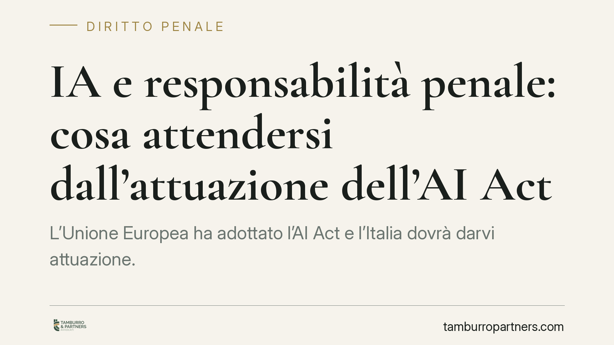

IA e responsabilità penale: cosa attendersi dall'attuazione dell'AI Act
L'Unione Europea ha adottato l'AI Act e l'Italia dovrà darvi attuazione. Circolano ipotesi su nuovi reati legati alla sicurezza dei sistemi di intelligenza artificiale e su un ampliamento della responsabilità degli enti. Molte fonti presentano questi interventi come già vigenti: non è così. Vediamo cosa è certo, cosa è ancora in divenire e come le imprese possono prepararsi senza inseguire testi non confermati.

Una premessa doverosa sullo stato delle norme
Su diversi portali circola la notizia di un decreto legislativo (indicato come "D.lgs. 160/2026") che introdurrebbe un nuovo reato di omessa adozione delle misure di sicurezza nei sistemi di IA (un ipotetico "art. 437-bis c.p.") e un nuovo reato presupposto per gli enti (un "art. 25-vicies" del D.lgs. 231/2001).
Mettiamo subito un punto fermo: allo stato non risultano confermati né la numerazione di quel decreto, né l'introduzione nel codice penale di un art. 437-bis, né l'inserimento di un art. 25-vicies nel catalogo dei reati 231. In materia penale non si scrive che una fattispecie esiste finché non è pubblicata in Gazzetta Ufficiale. Trattiamo quindi questi riferimenti come ipotesi di attuazione, utili a orientare la preparazione, non come diritto vigente.
Ciò che è certo è il quadro europeo: il Regolamento (UE) 2024/1689 (cosiddetto AI Act) è stato adottato ed è la cornice entro cui l'Italia legifererà. Da qui partiamo.
Il quadro certo: l'AI Act e gli obblighi di risk management
L'AI Act adotta un approccio per livelli di rischio. Per i sistemi ad alto rischio impone, tra l'altro, l'istituzione di un sistema di gestione del rischio documentato e mantenuto nel tempo (l'articolo 9 del Regolamento disciplina proprio il risk management, salvo verifica del testo consolidato applicabile).
Questo significa che, a prescindere dalle sanzioni penali future, l'impresa che progetta, immette sul mercato o utilizza sistemi ad alto rischio ha già oggi obblighi organizzativi precisi. È su questo terreno concreto che conviene lavorare.
Il piano penale ipotizzato: come leggerlo con prudenza
Se il legislatore introducesse un reato omissivo legato alla sicurezza dei sistemi IA, la struttura ricalcherebbe la logica dell'art. 437 c.p. (omessa collocazione di impianti o cautele contro gli infortuni sul lavoro): un dovere di attivarsi la cui violazione integra il reato.
In quel caso diventerebbero decisive alcune domande che oggi possiamo solo impostare:
- Chi è il soggetto obbligato? Progettista, fornitore (provider) e utilizzatore professionale (deployer) hanno posizioni diverse. Non è affatto scontato che rispondano allo stesso titolo.
- Quale elemento soggettivo? Un reato omissivo di questo tipo si costruisce di regola sulla colpa, cioè sulla violazione di uno standard di diligenza, non sul dolo.
- Quale posizione di garanzia? L'art. 40, comma 2, c.p. equipara il non impedire un evento, che si aveva l'obbligo giuridico di impedire, al cagionarlo. L'individuazione di chi "ha l'obbligo" sarà il vero nodo interpretativo.
- Come si coordina con il TU sicurezza? Dove l'IA incide sull'ambiente di lavoro, il nuovo presidio andrà armonizzato con il D.lgs. 81/2008, evitando duplicazioni e vuoti.
Finché il testo non è definitivo, queste restano griglie di analisi, non conclusioni.
Il piano 231: responsabilità degli enti
L'eventuale estensione del catalogo dei reati presupposto renderebbe l'ente responsabile per illeciti commessi nel suo interesse o vantaggio. Il meccanismo esimente resta però quello noto: l'ente non risponde se dimostra di aver adottato ed efficacemente attuato un modello di organizzazione idoneo a prevenire reati di quella specie.
Qui vale un principio che ripetiamo spesso: l'adempimento formale non coincide con la sicurezza sostanziale. Un documento di conformità non aggiornato non protegge da nulla. Il modello deve vivere: procedure applicate, controlli effettivi, tracciabilità delle decisioni.
Il piano civilistico: risarcimento dei danni da IA
Sul fronte risarcitorio circolano riferimenti a un alleggerimento dell'onere probatorio per il danneggiato. Attenzione: si tratta di contenuti riconducibili a proposte europee sulla responsabilità da IA il cui stato e recepimento vanno verificati caso per caso. Non sono, ad oggi, diritto interno vigente presentabile come regola operativa.
Cosa fare in concreto
- Mappa i tuoi sistemi di IA e classificali per livello di rischio secondo l'AI Act, isolando quelli ad alto rischio.
- Verifica le misure di sicurezza sostanziali già oggi: sistema di gestione del rischio, log, supervisione umana, procedure di aggiornamento. Non fermarti alla documentazione.
- Rivedi il modello 231 predisponendo l'area IA, così da essere pronto a integrare eventuali nuovi reati presupposto senza interventi tardivi.
- Ricostruisci le catene decisionali: chi decide, chi controlla, chi risponde. È il punto su cui si giocherà l'attribuzione di responsabilità.
- Confrontati con le coperture assicurative per capire cosa è già garantito e cosa resta scoperto rispetto ai danni da IA.
Affrontare l'adeguamento in modo strutturato, e non emergenziale, resta la scelta più razionale: consente di seguire l'evoluzione normativa senza rincorrerla.
---
*Contributo informativo a cura di Tamburro & Partners - Avv. Giuseppe Tamburro. Non costituisce parere legale.*
Ogni condominio ha una storia a sé.
Se gestisci un'amministrazione e vuoi un confronto su una specifica questione condominiale, scrivi allo studio. Ti rispondiamo entro un giorno lavorativo.